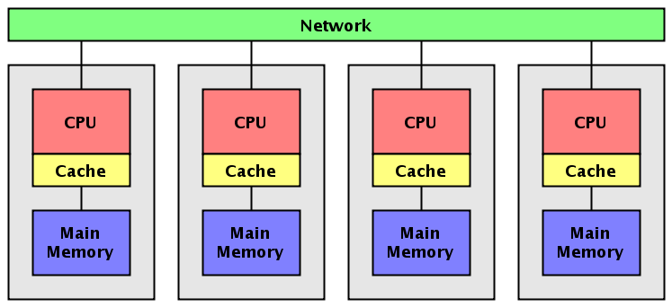

4.4 Sistema de Memoria distribuida: Multicomputadoras
Los sistemas de memoria distribuida o multicomputadores pueden ser de dos tipos básicos. El primer de ellos consta de un único computador con múltiples CPUs comunicadas por un bus de datos mientras que en el segundo se utilizan múltiples computadores, cada uno con su propio procesador, enlazados por una red de interconexión más o menos rápida.
Sobre los sistemas de multicomputadores de memoria distribuida, se simula memorias compartidas. Se usan los mecanismos de comunicación y sincronización de sistemas multiprocesadores.
Un clúster es un tipo de arquitectura paralela distribuida que consiste de un conjunto de computadores independientes interconectados operando de forma conjunta como único recurso computacional sin embargo, cada computador puede utilizarse de forma independiente o separada.
En esta arquitectura, el computador paralelo es esencialmente una colección de procesadores secuenciales, cada uno con su propia memoria local, que pueden trabajar conjuntamente.
Cada nodo tiene rápido acceso a su propia memoria y acceso a la memoria de otros nodos mediante una red de comunicaciones, habitualmente una red de comunicaciones de alta velocidad.
Los datos son intercambiados entre los nodos como mensajes a través de la red.
Una red de ordenadores, especialmente si disponen de una interconexión de alta velocidad, puede ser vista como un multicomputador de memoria distribuida y como tal ser utilizada para resolver problemas mediante computación paralela.
